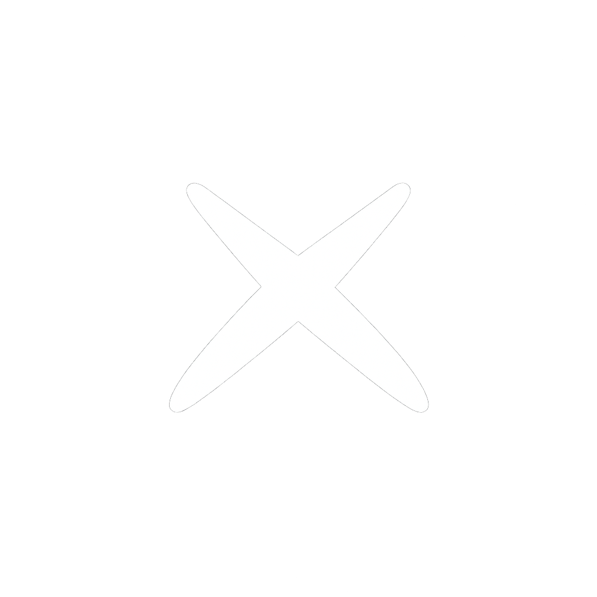
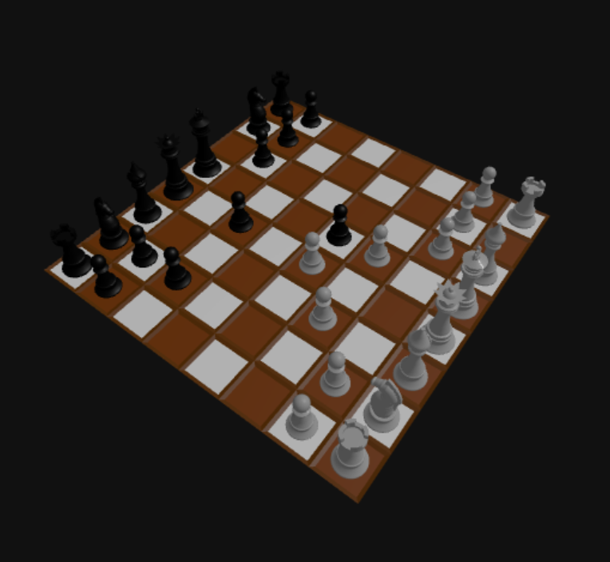
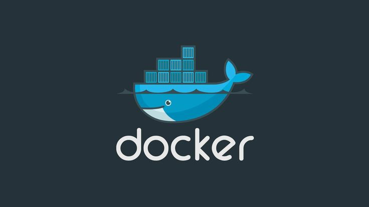
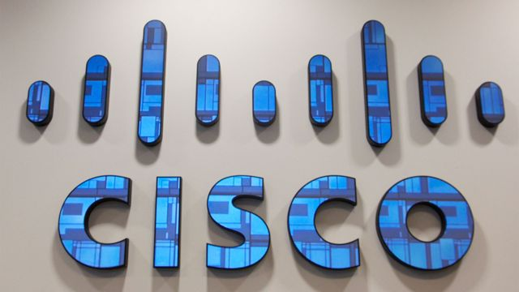

Année 1
FondationsBases solides : algorithmie, web, SQL, méthodologie, réseau (VLAN). Objectif : développer les connaissances, mise en situation et application des aquis.

Apprenti developpeur
Passionné par l'univers informatique, par son fonctionnement ainsi que son utilisation, j'ai pour vocation de développer des interfaces solides et performantes.

Maîtrise du HTML5 sémantique, architectures CSS modulaires (BEM, ITCSS), Grid & Flexbox avancés, animations CSS performantes.
ES6+, manipulation DOM, Fetch API, programmation asynchrone, gestion d'événements optimisée, modules JS natifs.
Optimisation des Core Web Vitals, lazy loading, code splitting, réduction du temps de chargement, techniques d'optimisation d'images.
Git & GitHub, Docker, React, GLPI, SonarQube, méthodologies Agile.
Parcours
Un parcours orienté projet et livrables : analyse, développement, données, sécurité, réseau.
Bases solides : algorithmie, web, SQL, méthodologie, réseau (VLAN). Objectif : développer les connaissances, mise en situation et application des aquis.
Projets plus complets : structuration, qualité, gestion des états, API, tests. Objectif : professionalisation et validation des aquis.
Mise en situation : tickets, délais, retours, itérations, travail en équipe. Objectif : produire utile, robuste, maintenable.

Context : Passionné par le jeu des échecs et sa complexité, je me suis tourné vers la logique derrière les projets numériques dans ce domaine.
Mission : Réalisé un jeu d'échec en visuel 3D avec pour contrainte 4 semaines pour livrer une maquette fonctionnelle.
Outils : VScode, Three.js, Blender, Chess.js, vite, HTML, CSS.
Compétences : Travailler en mode projet, structuration de l'architecture du projet, maitrise des outils liés au développement du jeu.

Context : Proposition de solution logicielle pour une entreprise fictive (SonarQube, Docker, GLPI). Refonte de la gestion des données utilisateurs.
Mission : Revue du système informatique de l'entreprise client: cadre juridique, RGPD, solution logiciel.
Outils : Docker, GLPI, SonarQube
Compétences : Comprendre les aspects légaux IT, documentation, synthetisation, ticketing, conteneurisation et réalisation de "Charte Qualité".

Développement de l'architecture type d'un réseau d'entreprise fictive avec cisco packet tracer. Création de plusieurs Vlan pour chaque service.
VisiterOrganisation d'une veille technologique dans le cadre du BTS. Analyse et synthetisation des informations collectées.
VisiterRéalisation d'un benevolat lors de l'événements Agile Tour à Montpellier en Septembre 2025.
VisiterReconditionnement ordinateurs association. Analyse technique des défaillances et proposition de solutions adaptées.
VisiterJe suis actuellement à la recherche d'opportunités. N'hésitez pas à me contacter pour échanger sur vos projets.
Envoyer un email